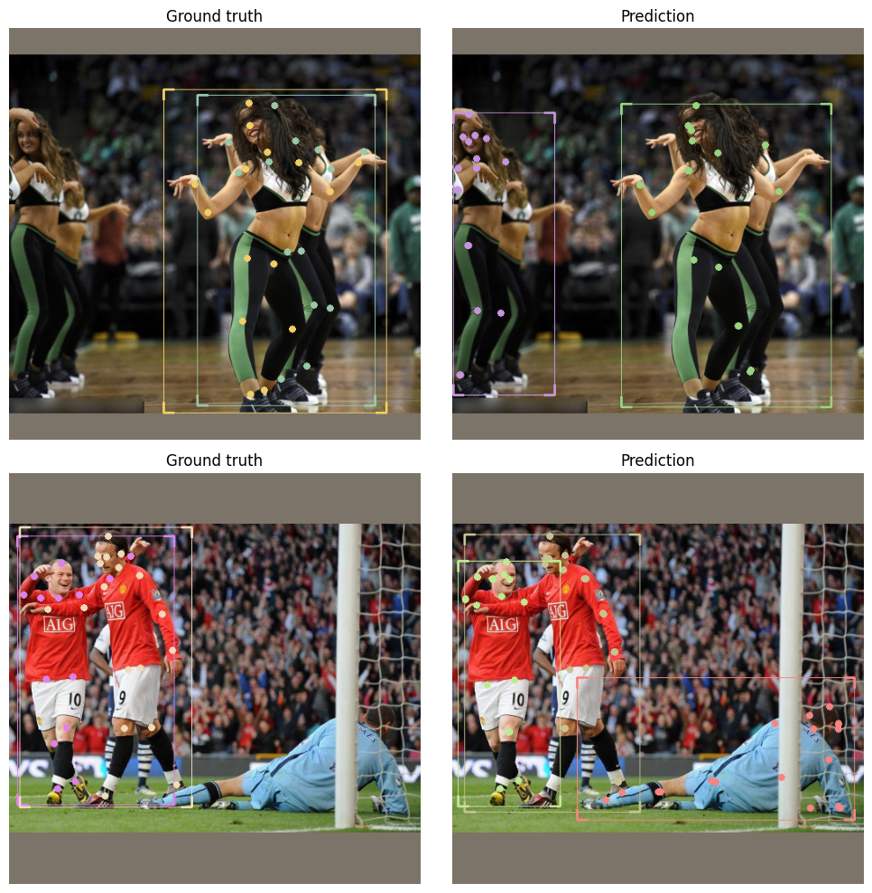

OCHuman dataset
From the OCHuman repo:
This dataset focus on heavily occluded human with comprehensive annotations including bounding-box, humans pose and instance mask. This dataset contains 13360 elaborately annotated human instances within 5081 images. With average 0.573 MaxIoU of each person, OCHuman is the most complex and challenging dataset related to human. Through this dataset, we want to emphasize occlusion as a challenging problem for researchers to study.
Disclaimer: it is currently not possible to run this notebook in Colab right away, given you need to download the OCHuman dataset manually. We advise running the notebook locally, as soon as you get access to the dataset.
Installing IceVision
Install from pypi...
# Torch - Torchvision - IceVision - IceData - MMDetection - YOLOv5 - EfficientDet Installation
!wget https://raw.githubusercontent.com/airctic/icevision/master/icevision_install.sh
# Choose your installation target: cuda11 or cuda10 or cpu
!bash icevision_install.sh cuda11
... or from icevision master
# # Torch - Torchvision - IceVision - IceData - MMDetection - YOLOv5 - EfficientDet Installation
# !wget https://raw.githubusercontent.com/airctic/icevision/master/icevision_install.sh
# # Choose your installation target: cuda11 or cuda10 or cpu
# !bash icevision_install.sh cuda11 master
# Restart kernel after installation
import IPython
IPython.Application.instance().kernel.do_shutdown(True)
Defining OCHuman parser
from icevision.all import *
_ = icedata.ochuman.load_data()
[1m[1mINFO [0m[1m[0m - [1mThe mmdet config folder already exists. No need to downloaded it. Path : /home/ubuntu/.icevision/mmdetection_configs/mmdetection_configs-2.16.0/configs[0m | [36micevision.models.mmdet.download_configs[0m:[36mdownload_mmdet_configs[0m:[36m17[0m
[1m[1mINFO [0m[1m[0m - [1m
MANUALLY download AND unzip the dataset from https://cg.cs.tsinghua.edu.cn/dataset/form.html?dataset=ochuman.
You will need the path to the `ochuman.json` annotations file and the `images` directory.
[0m | [36micedata.datasets.ochuman.data[0m:[36mload_data[0m:[36m7[0m
Parse data
Note: you might need to change the ../../ path used from this point onwards, according to your filesystem (e.g. according to where you stored the dataset).
parser = icedata.ochuman.parser("../../OCHuman/ochuman.json", "../../OCHuman/images/")
train_records, valid_records = parser.parse(data_splitter=RandomSplitter([0.8, 0.2]),
cache_filepath="../../OCHuman/ochuman.pkl")
len(train_records), len(valid_records)
[1m[1mINFO [0m[1m[0m - [1mLoading cached records from ../../OCHuman/ochuman.pkl[0m | [36micevision.parsers.parser[0m:[36mparse[0m:[36m113[0m
(4064, 1017)
Datasets + augmentations
presize = 1024
size = 512
valid_tfms = tfms.A.Adapter([*tfms.A.resize_and_pad(size), tfms.A.Normalize()])
train_tfms = tfms.A.Adapter([*tfms.A.aug_tfms(size=size, presize=presize, crop_fn=None), tfms.A.Normalize()])
train_ds = Dataset(train_records, train_tfms)
valid_ds = Dataset(valid_records, valid_tfms)
samples = [train_ds[1] for _ in range(3)]
show_samples(samples, ncols=3)

len(train_ds), len(valid_ds)
(4064, 1017)
Dataloaders
model_type = models.torchvision.keypoint_rcnn
train_dl = model_type.train_dl(train_ds, batch_size=16, num_workers=4, shuffle=True)
valid_dl = model_type.valid_dl(train_ds, batch_size=16, num_workers=4, shuffle=False)
Model
model = model_type.model(num_keypoints=19)
Train a fastai learner
from fastai.callback.tracker import SaveModelCallback
learn = model_type.fastai.learner(dls=[train_dl, valid_dl], model=model, cbs=[SaveModelCallback()])
learn.lr_find()
/home/ubuntu/anaconda3/envs/ice/lib/python3.8/site-packages/torch/functional.py:445: UserWarning: torch.meshgrid: in an upcoming release, it will be required to pass the indexing argument. (Triggered internally at ../aten/src/ATen/native/TensorShape.cpp:2157.)
return _VF.meshgrid(tensors, **kwargs) # type: ignore[attr-defined]
SuggestedLRs(valley=4.365158383734524e-05)

learn.fine_tune(20, 3e-4, freeze_epochs=1)
| epoch | train_loss | valid_loss | time |
|---|---|---|---|
| 0 | 4.737989 | 4.609861 | 08:19 |
Better model found at epoch 0 with valid_loss value: 4.609861373901367.
| epoch | train_loss | valid_loss | time |
|---|---|---|---|
| 0 | 4.346546 | 4.307302 | 09:02 |
| 1 | 4.303442 | 4.230606 | 08:46 |
| 2 | 4.201407 | 4.191602 | 08:37 |
| 3 | 4.194221 | 4.123021 | 08:27 |
| 4 | 4.168465 | 4.063463 | 08:32 |
| 5 | 4.112132 | 4.037125 | 08:24 |
| 6 | 4.047480 | 3.952349 | 08:20 |
| 7 | 3.980796 | 3.875872 | 08:29 |
| 8 | 3.898531 | 3.818884 | 08:25 |
| 9 | 3.856582 | 3.771754 | 08:27 |
| 10 | 3.770988 | 3.699221 | 08:24 |
| 11 | 3.736982 | 3.637545 | 08:18 |
| 12 | 3.645181 | 3.561272 | 08:12 |
| 13 | 3.570732 | 3.501793 | 08:20 |
| 14 | 3.529509 | 3.464969 | 08:20 |
| 15 | 3.480687 | 3.416519 | 08:20 |
| 16 | 3.416651 | 3.388196 | 08:26 |
| 17 | 3.375072 | 3.358102 | 08:21 |
| 18 | 3.355783 | 3.351155 | 08:21 |
| 19 | 3.344901 | 3.357507 | 08:17 |
learn.recorder.plot_loss()
Better model found at epoch 0 with valid_loss value: 4.3073015213012695.
Better model found at epoch 1 with valid_loss value: 4.230605602264404.
Better model found at epoch 2 with valid_loss value: 4.1916022300720215.
Better model found at epoch 3 with valid_loss value: 4.123020648956299.
Better model found at epoch 4 with valid_loss value: 4.063462734222412.
Better model found at epoch 5 with valid_loss value: 4.037125110626221.
Better model found at epoch 6 with valid_loss value: 3.9523494243621826.
Better model found at epoch 7 with valid_loss value: 3.8758718967437744.
Better model found at epoch 8 with valid_loss value: 3.8188838958740234.
Better model found at epoch 9 with valid_loss value: 3.771754026412964.
Better model found at epoch 10 with valid_loss value: 3.699220657348633.
Better model found at epoch 11 with valid_loss value: 3.637545347213745.
Better model found at epoch 12 with valid_loss value: 3.561272144317627.
Better model found at epoch 13 with valid_loss value: 3.5017926692962646.
Better model found at epoch 14 with valid_loss value: 3.464968681335449.
Better model found at epoch 15 with valid_loss value: 3.4165189266204834.
Better model found at epoch 16 with valid_loss value: 3.388195753097534.
Better model found at epoch 17 with valid_loss value: 3.3581018447875977.
Better model found at epoch 18 with valid_loss value: 3.3511552810668945.

Show model results
model_type.show_results(model, valid_ds)

Save model
torch.save(model.state_dict(), "../../OCHuman/model.pth")
model = model_type.model(num_keypoints=19)
state_dict = torch.load("../../OCHuman/model.pth")
model.load_state_dict(state_dict)
<All keys matched successfully>
Running inference on validation set
infer_dl = model_type.infer_dl(valid_ds, batch_size=8)
preds = model_type.predict_from_dl(model=model, infer_dl=infer_dl, keep_images=True)
show_preds(preds=preds[68:70], show=True, display_label=False, figsize=(10, 10))
0%| | 0/128 [00:00<?, ?it/s]

plot_top_losses
#model.train()
sorted_samples, sorted_preds, losses_stats = model_type.interp.plot_top_losses(model, valid_ds,
sort_by="loss_total")
[1m[1mINFO [0m[1m[0m - [1mLosses returned by model: ['loss_classifier', 'loss_box_reg', 'loss_objectness', 'loss_rpn_box_reg', 'loss_keypoint'][0m | [36micevision.models.interpretation[0m:[36mplot_top_losses[0m:[36m218[0m
0%| | 0/1017 [00:00<?, ?it/s]
0%| | 0/128 [00:00<?, ?it/s]